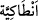

21. “Sizden herhangi bir ücret istemeyen bu kimselere tâbi olun, çünkü onlar
hidayete ermiş kimselerdir.”
22. “Bana ne olmuş ki, beni yaratana ibâdet etmeyecekmişim! Halbuki, hepiniz
O’na döndürüleceksiniz.”
23. “O’ndan başka ilahlar mı edineyim? O çok esirgeyici Allah, eğer bana bir
zarar dilerse onların (putların) şefâati bana hiçbir fayda vermez, beni
kurtaramazlar.”
24. “İşte o zaman ben apaçık bir sapıklığın içine gömülmüş olurum.”
25. “Şüphesiz ben, Rabbinize inandım, beni dinleyin.”
“Onlara, şu şehir halkını” Antakya halkını “misal getir: Hani onlara” Antakya
halkına “elçiler”; yâni Îsâ (a.s.)’ın elçileri “gelmişti.” Sanki burada şöyle denilmiştir:
‘Elçilerin geldikleri zamanı misal getir; ya da elçilerin geldikleri vakti onlara
an/zikret.’
et-Te’vîlâtü’n-Necmiyye’de geçtiği üzere Allah Teâlâ bu (13.) âyetten 29. âyetin
sonuna kadar dostlarına olan türlü lütuflarına ve düşmanlarına olan çeşitli kahrlarına
işâret etmektedir.
Allah Teâlâ Peygamberlerin efendisi (s.a.)’e bu şehir halkının kıssasını Mekke
müşriklerine hatırlatmak suretiyle bu şehir halkının kâfirlerinin başına gelen azabın
onlara da gelmesinden sakınmaları için onları uyarmasını emretmiştir.
el-İrşâd’da der ki: “Darb-ı mesel/misal getirme iki şekilde kullanılır: Birincisi, tuhaf
bir durumu, yine onun gibi olan diğer bir durumla karşılaştırma konusunda kullanılır.
Buna göre mânâ: ‘İnkar ve peygamberleri yalanlamada ısrar konusunda şehir halkını
Mekke halkına misal getir’ demektir. Yani onların hâlini bunların hâliyle karşılaştır.
İkincisi bir benzeriyle karşılaştırma kasdı olmaksızın tuhaf bir durumu insanlara
zikretme ve açıklama konusunda kullanılır. Buna göre mânâ: ‘Tuhaf olmada mesel/misâl
gibi olan bu şehir halkının kıssasını onlara zikret ve açıkla’ demektir.
Âyette geçen “şehir” Rum şehirlerinden Antakya’dır. “Avâsım (müstahkem sınır
şehirleri)” denilen beldelerin başkentidir. Kaynak suları ve kayadan büyük surları
vardır. İçinde beş dağ vardır. Çevresi on iki mildir. Nitekim el-Kâmûs’ta böyle
geçmektedir.
İmam Süheylî der ki: “__WORD__ (Antakya)” kelimesi Antakis halkına nisbet edilmiştir.
Antakis ise bu şehri bina eden kimsedir. Sonra kelime değiştirilmiştir. et-Tekmile’de bu
şehir halkının kıssasının mülûkü’t-tavâif (tavâif-i mülûk)[116]zamanında olduğu söylenir.
Bahrû’l-ulûm’da şöyle der: “Antakya Peygamberimiz (s.a.)’in şehadetiyle
ateş/cehennem şehirlerindendir. Çünkü Peygamberimiz (a.s.) şöyle buyurmuştur: “Dört
şehir cennet şehirlerindendir. Bunlar Mekke, Medîne, Beytü’l-Makdis (Kudüs) ve
Yemen’in San’â şehridir. Dört şehir de ateş/cehennem şehirlerindendir. Bunlar